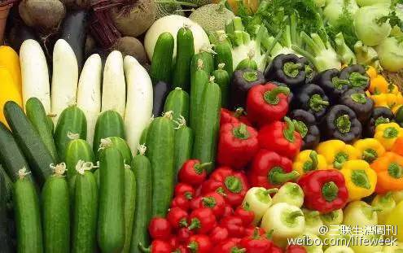
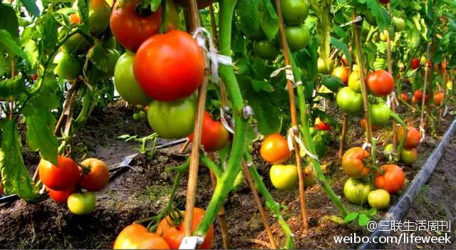

按理说，世界历史中，在火药广泛使用之后，文化技术先进的文明被游牧民族欺负的趋势被逆转。游牧民族再难蚕食先进文明的地盘了。但就在这股浪潮中，火器技术大发展的明朝竟然逆潮流被游牧民族清朝夺取了全国江山。怎么想都觉得匪夷所思啊。
吓人啊！原来买有机食品就是花钱买有害物质去了啊！太坑爹了！@三联生活周刊:【有机农业骗局】环保是有机行业的初衷，也是这种方式最大的优点，可惜大多数消费者并不在乎这个，他们只关心自己的身体健康，于是有机行业便只好硬着头皮夸大有机食品的健康属性，岂知这一点并不是有机食品的强项。有机农业骗局 